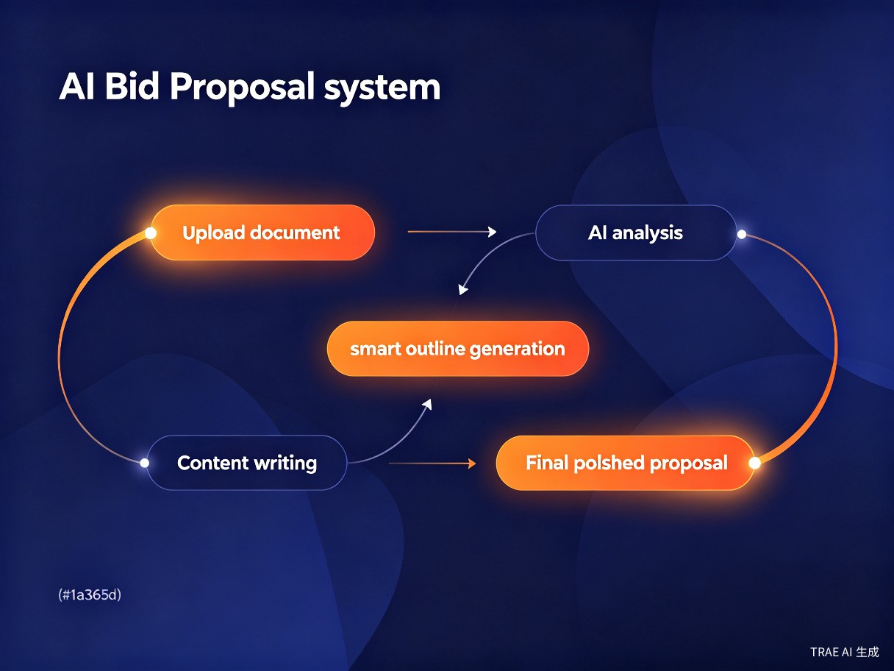
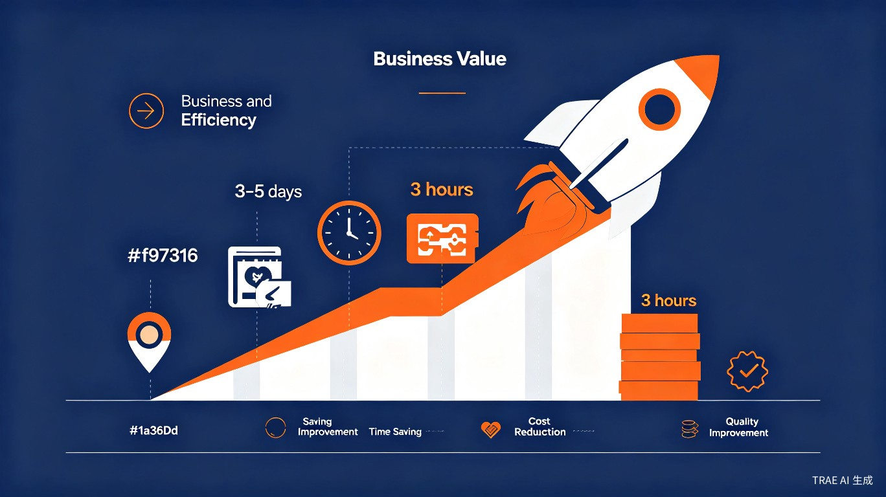

中小企业投标专员
日常负责编标工作，需要高效工具提升产出速度和质量
覆盖招标文件解析到标书生成全流程的AI智能编标系统。上传招标文件，AI自动提取关键信息、生成目录大纲、匹配企业资质并输出专业方案内容。
在招投标过程中，标书编制长期依赖大量人工投入。传统编标最大的痛苦——从来不是写核心方案，而是无尽的重复劳动。
传统编标需人工逐页阅读招标文件、手动梳理评分标准，一份完整标书往往耗费3-5天，严重制约投标效率。
企业资质、业绩证明、财务报表等资料在每次投标中反复调取和排版，大量时间浪费在"复制粘贴"上。
编标涉及法规合规、评分点响应、技术方案撰写等专业能力，缺乏经验者极易遗漏关键条款或格式不规范，导致无效投标。
历史投标文件散落在不同电脑和文件夹中，查找困难，难以实现系统性复用，每次编标几乎从零开始。
技术参数与招标要求逐条对照，人工比对极易出错或遗漏，一个疏忽就可能造成废标。
当前通用大模型工具缺乏招投标专项训练，废标风险识别准确率仅为72.1%，生成内容的专业性和评分点贴合度普遍一般。
标标必达面向需要频繁参与招投标但团队规模有限的中小企业和个体经营者，帮助他们以更低的成本、更快的速度完成专业标书编制。
日常负责编标工作，需要高效工具提升产出速度和质量
兼顾多个项目，需要快速产出专业投标方案
缺乏专职编标人员，需要低门槛的标书编制解决方案
招标公告发布到截标时间紧迫，需要在短时间内完成高质量标书
企业同时跟进多个招标项目，编标任务堆积，人力捉襟见肘
企业拓展新业务领域，缺乏该行业标书撰写经验和模板积累
已有成熟历史投标资料，但每次编标仍需从零查找、整理和适配
标标必达覆盖标书编制全流程，每一步都由AI深度参与，确保效率与质量的双重保障。
上传招标文件，AI自动识别并提取评分标准、资质要求等关键信息
根据评分标准自动生成标书目录大纲，确保评分点全覆盖
智能匹配企业历史资质、业绩证明，一键复用云端资料库
AI生成专业技术方案，支持扩写、重写、缩写等灵活调整
自动比对技术参数与招标要求，确保响应零遗漏

从效率提升到商业价值再到社会意义，标标必达正在重新定义招投标行业的标书编制方式。
将传统3-5天的编标周期压缩至3小时以内，彻底解放编标人员，让"堆人力"转向"拼算力"。
降低参与招投标的门槛和成本，普通商务人员即可快速产出高质量投标文件，精准评分点响应显著降低废标风险。
标准化、智能化的编标流程从源头提升投标文件规范性，净化招投标市场环境，推动行业向更高效、更公平的方向发展。

通过可视化数据直观展示标标必达在效率、成本和质量方面的显著优势。
在关键能力维度上，标标必达全面超越传统人工编标和通用大模型工具。
| 对比维度 | 传统人工编标 | 通用大模型工具 | 标标必达 |
|---|---|---|---|
| 编标周期 | 3-5天 | 1-2天 | 3小时以内 |
| 废标风险识别 | 依赖经验 | 准确率72.1% | 专项训练，高精度 |
| 评分点贴合度 | 人工逐条核对 | 贴合度一般 | 自动精准响应 |
| 资质资料复用 | 每次手动查找 | 不支持 | 云端智能匹配 |
| 偏离表自动比对 | 人工逐条比对 | 不支持 | AI自动生成 |
| 历史资料沉淀 | 散落各处 | 无记忆 | 云端数字资产 |
| 使用门槛 | 需专业团队 | 需提示词能力 | 普通商务即可 |
AI大模型技术的成熟让"专业编标自动化"成为可能。加入标标必达，开启智能编标新时代。
立即体验标标必达